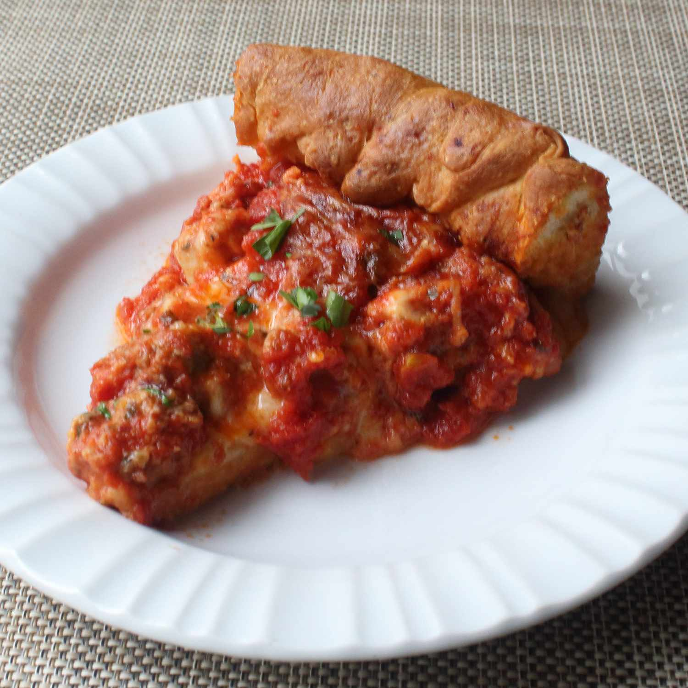

Home
Chicage Deep-Dish Pizza

Description
This deep-dish pizza recipe features a unique buttery cornmeal
crust. Home cooks will find it more forgiving than its New York
counterpart. No need to worry about having the hottest oven or too
many toppings — just make sure your sauce is very thick and
flavorful! I garnished mine with parsley and more Parmesan cheese.
Ingredients
-
Dough
- 1 1/3 cups warm water
- 2 1/4 teaspoons active dry yeast
- 1/4 cup olive oil
- 1/4 cup melted butter
- 2 teaspoons white sugar
- 1 1/2 teaspoons fine salt
- 1/2 cup cornmeal
- 3 3/4 cups all-purpose flour
- 2 teaspoons olive oil, or as needed, divided
- 4 cups pizza sauce, or to tase
-
Fillings and Toppings
- 4 ounces sliced provolone cheese
- 8 ounces fresh mozzarella cheese, cubed
- 1 pound spicy Italian sausage, casings removed
-
4 ounces shreded part-skim, low-moisture mozzarella
cheese
- 2 ounces Parmigiano-Reggiano cheese
- 1 tablespoon olive oil
Steps
-
Make the dough: Pour water into the bowl of a stand mixer fitted
with a paddle attachment. Sprinkle in yeast and let dissolve,
about 10 minutes. Add olive oil, melted butter, sugar, salt,
cornmeal, and most of the flour, in that order. Knead, stopping
occasionally to scrape down the sides and adding more flour as
needed, until smooth and elastic.
-
Transfer dough to a lightly floured work surface. Knead in extra
flour if needed. Roll into a ball and transfer to a bowl greased
with 1/2 teaspoon olive oil. Cover with a plate and let rise in
a warm spot until doubled in volume, 1 to 2 hours.
-
While the dough is rising, simmer pizza sauce in a pot over low
heat until very thick, 60 to 90 minutes.
- Preheat the oven to 425 degrees F (220 degrees C).
-
Poke dough to deflate and turn out onto your work surface. Press
and stretch out dough into a round shape 3 to 4 inches larger
than a 12-inch cast iron skillet. Brush the skillet with 1 1/2
teaspoons olive oil. Place dough into the skillet; stretch and
pull to evenly distribute it over the bottom and sides.
-
Apply fillings and toppings in order as follows: Lay provolone
cheese over the bottom of the crust. Scatter fresh mozzarella
over provolone, then add Italian sausage and firm mozzarella.
Ladle pizza sauce generously over top. Grate Parmesan cheese
over pizza sauce, then fold the crust edges in towards the
center to seal in the sides. Drizzle 1 tablespoon olive oil over
crust and center of pizza.
-
Bake in the center of the preheated oven until crust sounds
hollow when tapped and pizza is beautifully browned, about 35
minutes. Let rest for 10 minutes before slicing.
Credits